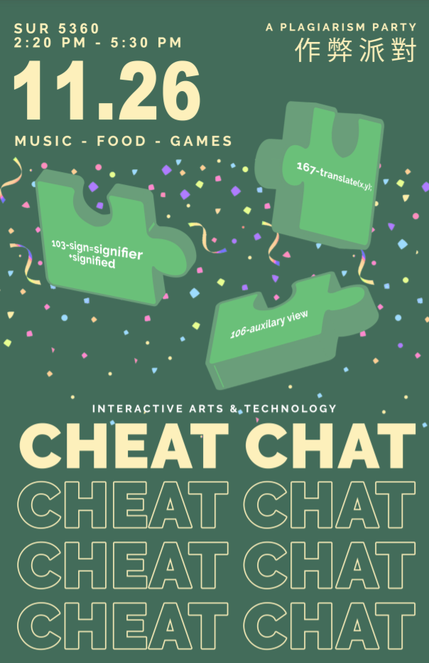

Graphic - Poster Design



About
This is the final project for IAT 103 in 2019 which is about holding a feasible campaign for introducing the idea of avoiding plagiarism to first year students. The biggest part for this project is to design a serial of posters to get attention from the target audience and let them take part in our campaign.
My Role
Major designer and illustrator
APPLIED SKILLS/TOOLS
Adobe Illstruator, Indesign, Photoshop, Procreate